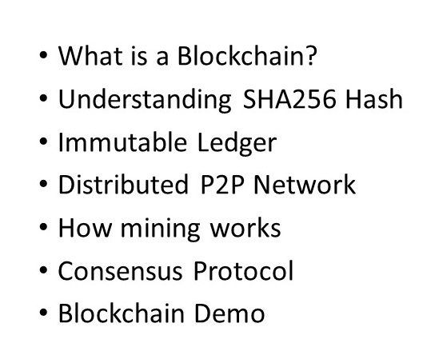
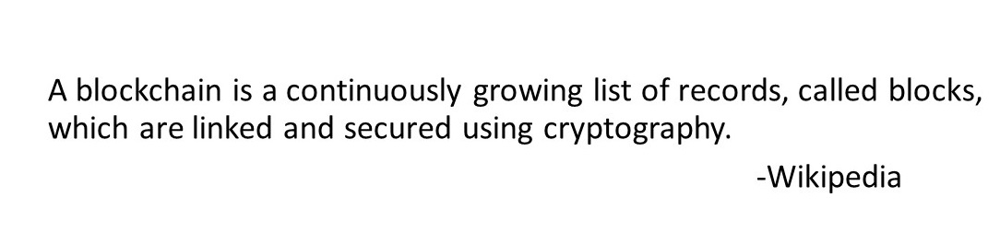
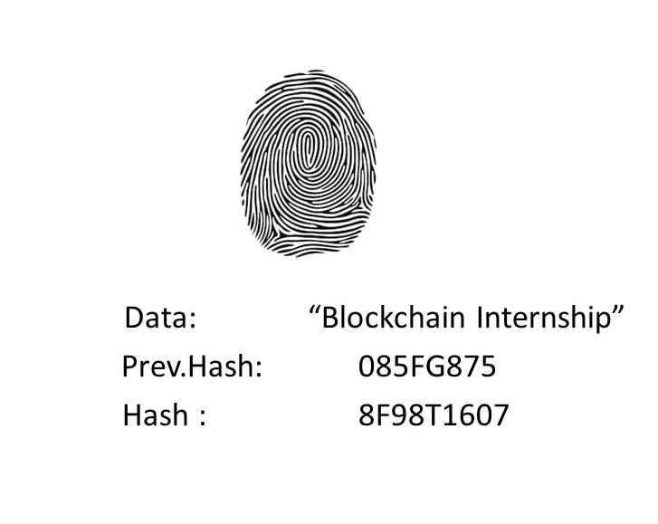
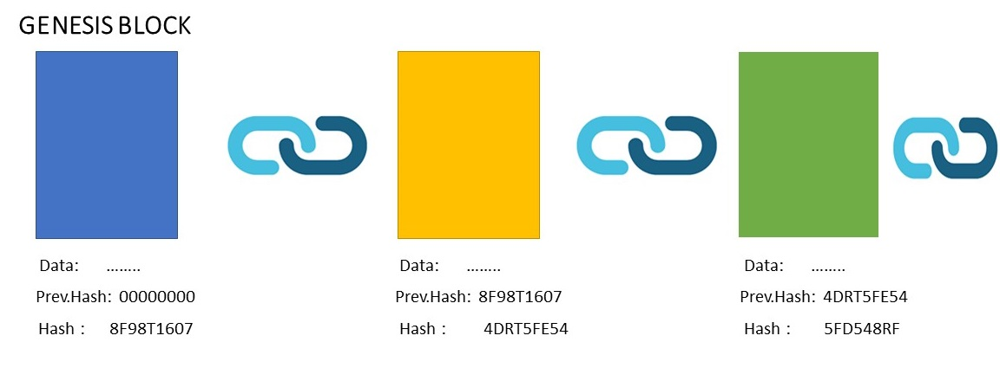
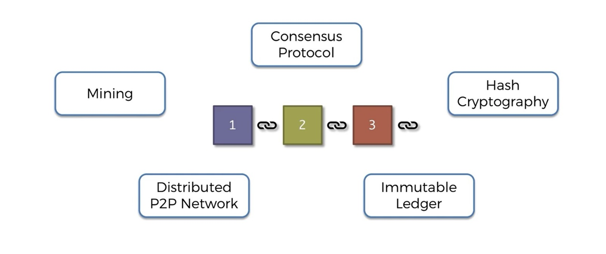
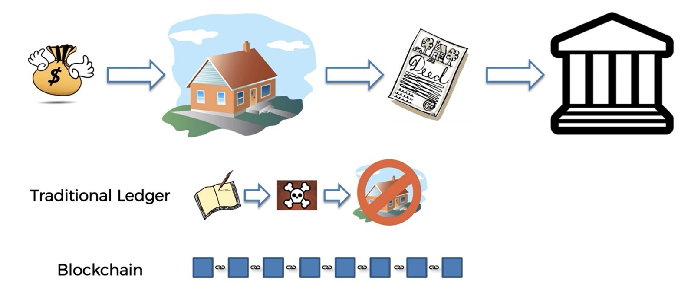
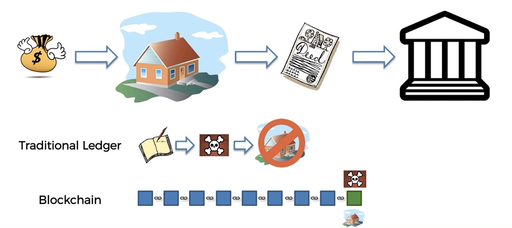
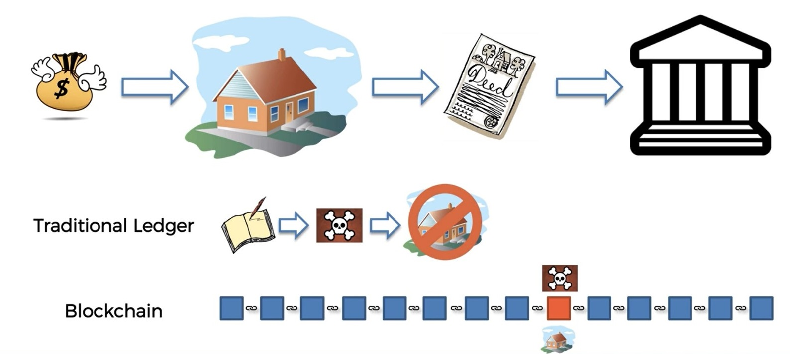
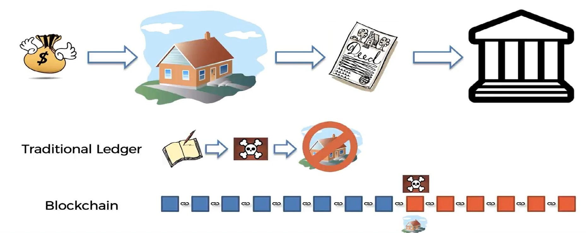

Address
TechnoTriumph IT Innovative Solution LLP,
Kodikeri, Kulai Surthakal
Karnataka,India
Contacts
Email: contact@technotriumph.in/ triumph123group@gmail.com
Phone: +91 7019582399
Learn the art of learning
Blockchain Intuition
Hello and welcome to the course on blockchain I'm super excited to kick off this first section and we're going to started off with a plan of attack.
Block chain is not complex is not like as complex as artificial intelligence or machine learning or like those other technological topics that exist out there right now. But at the same time there are so many different components of varying complexity in fluxions and it is important.
And so that's what we're going to have a plan of attack so that you can see like a map of what we're going to go through so you know what to expect from the section going to serve as a guide as we go along.
All right.
So let's have a look.
All right we're going to start off with a high level overview of what a is just to get that very basic very the most bottom layer of our fundamentals in place so we can build upon that then we're going to talk about .
A very important part of change which is cryptography we're going to discuss the SHA 256 hash algorithm we're going to dive deep into how it works or don't worry there will be will be mathematics although there will be additional reading which you can look into but at the same time we'll understand what role it plays in block change in the cryptographic links between blogs and other parts .
Plan of Attack

We'll find out what a block is at a high level.
What is blockchain?

So this is a very general definition.
So let's have a look at one of these records are so-called blocks what constitutes a block Well a block because it's a record. We'll obviously have a data inside it. For instance it might have just a string of words hello world. Then it will have a value which is called a previous hash and we'll get to this in a second and then we'll have a value which is its own hash.
And what the hash is it's like a fingerprint of this block. It's like taking the first two elements the data and the previous hash and finding the like a number which represents that data. So a shortened version of that data specifically 64 characters long .
But basically right now the best way to think about it is a hash a digital hash is like a fingerprint of some amount of data. And that makes its much clearer or makes it clearer now what's going on .So the block here has its own hash and then the previous hash which is contained within the block as a reference is actually the hash of the block that came before it.
What is blockchain?

So let's have a look at that in action.
What is Blockchain?

So here we've got block number one. It's also called the Genesis block in a box in the first block and it's called Genesis block because after the block chain is initialized that block will always stay blocking them on forever and ever and ever for eternity it will never change That's no other block will become the once. This block is always going to be the first one.
That's where it all originate.
You might have some data in it. We're not going to go into detail what kind of data is in there but assuming there's some data it doesn't have a previous hash inside this block because this is the jettisons block is the only block that will have a previous hash. So we're just going to present them all zeros and then it will have its own hash again.
For now let's think of hash as a fingerprint.
We'll find out more about how these hashes are derived .And then there is block number two and a book on Mattoo also has some data. This time it does have a previous hash and it has its own hash again. But this is conceptually hard works every brought block has its own fingerprint and it also references the fingerprints of the previous block.
So if anything were to change and block number one it's fingerprint would change. So if anything were to change in data of one block, This fingerprint would change and it would no longer match the fingerprint. So this block would know or we would know by looking at this block that somebody tampered with this block.
And then again looking at the three data it's got the previous hash it's got its own hash and it's linked to the so on and so on.
So again Conceptually we can see that if anybody were to tamper with any block this one and this one then the fingerprints would no longer match up and the chain would be invalid the chain would show that there's something wrong.
There are many more concepts to blockades and things like mining distributed peer to peer network consensus protocol immutable ledger and hash cryptography. So right now many of these bytes are very alien or very confusing at the moment. And that's totally fine because we're going to go through them one by one in the coming section .

All right so here's our map and previously we spoke about cryptography and so we can check that off.
And now we are moving on to the immutable Ledger. So what is the immutable Ledger.
let's look at an example.
Immutable Ledger
Let's say you want to go and buy a house. And so you have money might be a pile of cash or most likely just money in the bank and then you take that money and you go and pay for your dream home. So what do you get in exchange in exchange you actually get the home. But how do you know that you have the home. How do how can you prove to someone else that that's your home.
Like why can't you just go up to any house on the street and say that that's your home. Well because in exchange for that money what you get is a deed a title deed to the house and whoever has the deed is the owner of the home.
So what you need to do the deed is you need to take it to a government authority such as a local council or the city council or some other authority to them they might differ. So there it is. You take the deed there and you register your ownership you show them the deed and you say this is now my house I paid money for it. And I would like to register that it is my home. So that's like a simplified explanation of what happens I'm not an expert in property. But this drives the point home you need to register your ownership with the local authority.

And so how do they register. Well usually they write it down in the ledger but usually they always write it down in a ledger and in some cases some modern governments more modern governments they use digital ledgers. But the interesting thing is and I was very surprised to learn this myself that still a huge percentage of governments especially in not like not in the first world countries and third world countries they still use written letters.
So actual physical books and in fact not just in all countries even in first world countries in many cases it's still a physical book like a notepad with numerate pages where people just write down who owns what and then what it's about once it runs out they put into the archives they get a new one and then they start a new page and so on.
This is all you have you have the title deed which you know you need to hope to keep safe that you will lose it or you will burn somewhere and you have this little tiny entry in a book somewhere in a building that belongs to the government where it says you own the house.
What if that building burns down or what if somebody steals that book or what if somebody wants to come along and hack that book. And we don't even have to use the word hack because it's a book. They just go in and they're about the page and they glue in a different page where everything is the same except for your entry which they changed.
And then what does that mean.
Well that means that all of a sudden you don't have the house anymore like physically you might still be living in the house and you might think it's yours. But in reality just because that one line of information has been erased from a book somewhere in the government authority all of a sudden you don't actually have the house and it's even if it's not a book even if it's an electronic document like an Excel spreadsheet.
How difficult is it for somebody to go into an Excel spreadsheet and just change one line. So it's very easy still.
Right so. But in reality it's actually not theirs anymore just because of some error or some somebody messing up a fuss.
So now comes into college watching how can we fix this situation.

Well let's say we have all of these titles stored in a block chain rather than on the paper or in a Excel spreadsheet or a database. Yet this whole block chain can be stored like very simplistically like in that govern facility even that's really better. And so every time you can see like we've really there's already been some transactions in this block chain and then it's your turn.
You buy a house. And so you add in each transaction and then a couple of months the months pass by or a couple of years pass by and then somebody comes along and decides to take your home away from you by tampering with the data in the block. And they also realize that home and they want to report that page of the book but they get into the
facility and they see that it's actually not a book. It's a whole block chain.
And now so if this person tries to tamper with the data in that specific block then what happens is that will change the hash of this block. And what that means is this cryptographic link will no longer work because the hash here is different to the hash recorded here for the previous block so we have the previous year the field previous hash it will no longer match this one. So this person or a hacker would have to change this lock as well. But as soon as they change this blog this blog called match this one and they have to change this one
as well.

And as soon as they change it this one or this one and so on so because of this cryptographically. As soon as they change one block all of the blocks after that will no longer be valid they will longer be connected to the chain.
It would be very easy to tell that very hard for the person to tamper with the record. So unlike in the book where they can just change one entry here they would have to change the all of the entries following yours. And that's what we mean when we say that it's an immutable nature because you cannot change data as soon as data has gone into the box.

It's very very difficult like at this stage we can see it's very difficult and that's when we just have the block installed in this government authority.
Well we talked about peer to peer distributed networks. You'll see that it's practically impossible to change a single block in the chain simply because the way it's structured because more and more components are added. So the longer the more time passes the harder it becomes to change and eventually becomes practically impossible.
OK so that's what I mean an immutable Ledger is.
 Click here to download App for Blockchain Internship
Click here to download App for Blockchain Internship
TechnoTriumph IT Innovative Solution LLP,
Kodikeri, Kulai Surthakal
Karnataka,India
Email: contact@technotriumph.in/ triumph123group@gmail.com
Phone: +91 7019582399